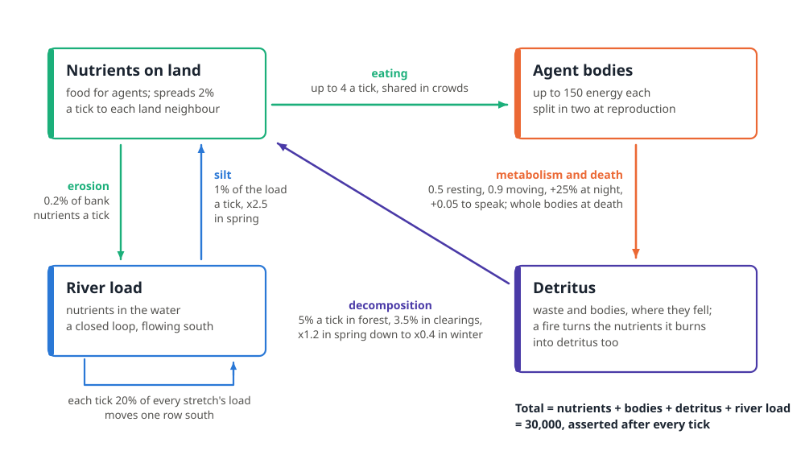
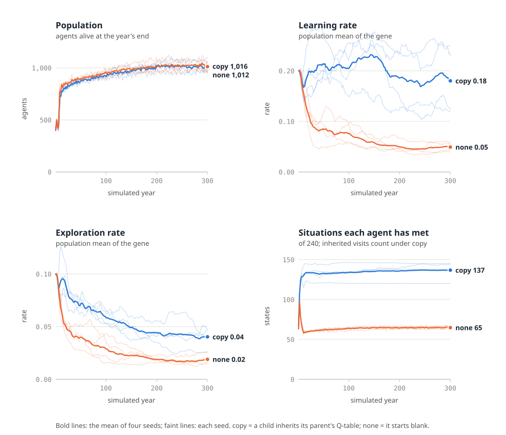
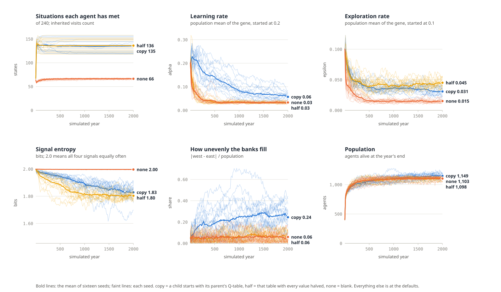
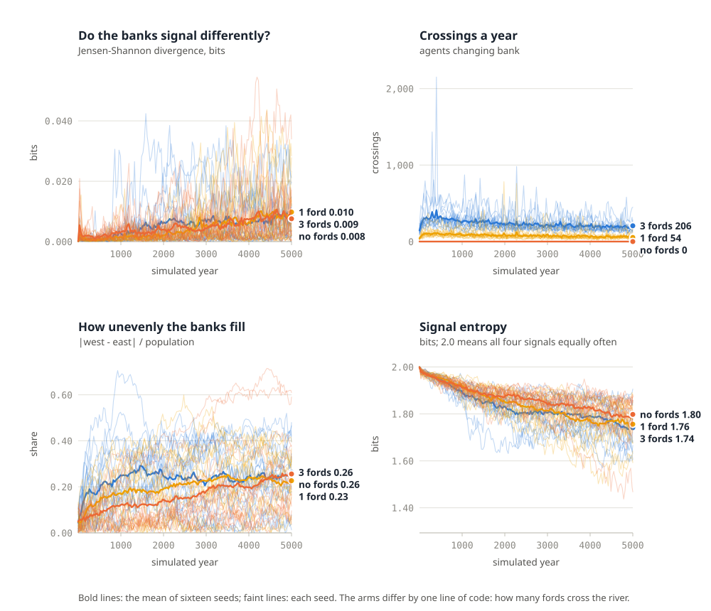
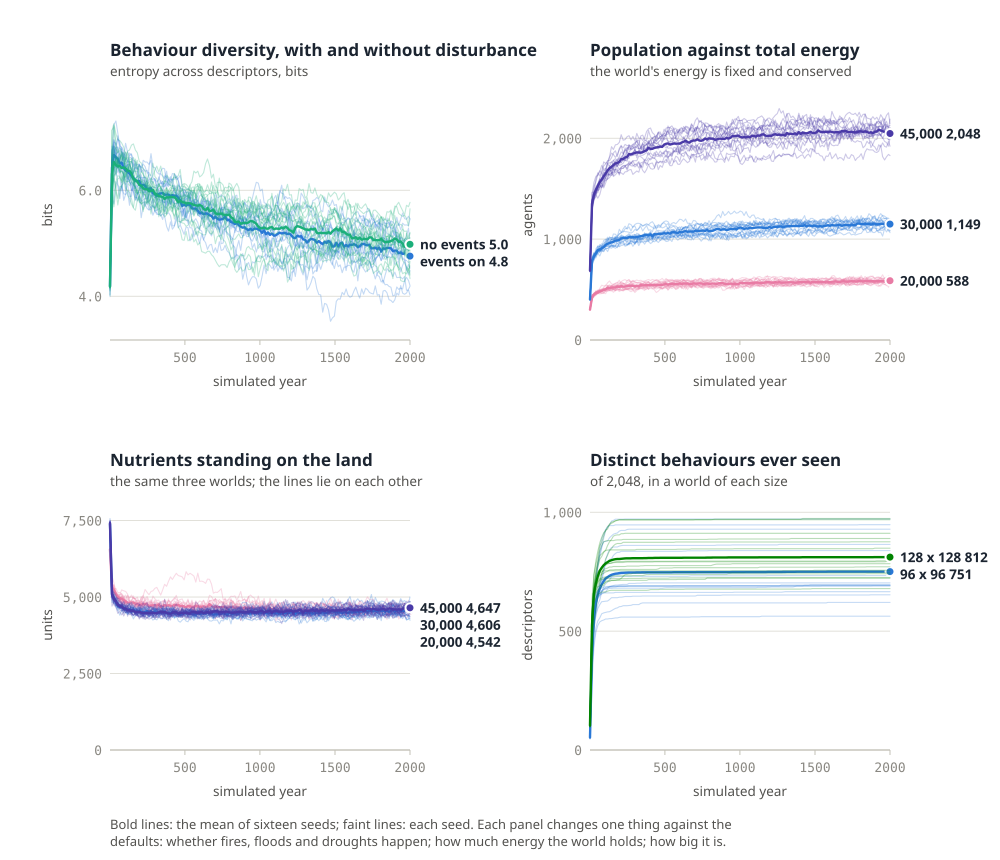
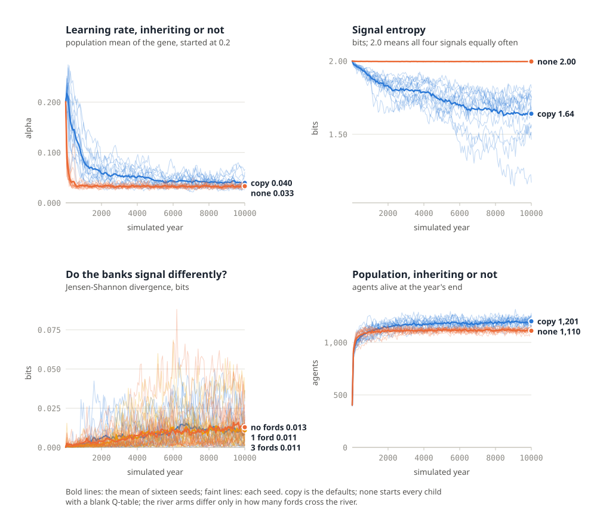

About this paper
The research paper Running Persistent AI Worlds (second edition, 10 October 2026) ran two scenarios on a laptop: two learning agents in a forest that never ends (Scenario A), and an evolving population sealed in a box with a fixed amount of energy (Scenario B). This paper joins them into one world, adds a river, and sets it up to run for days on the Ryzen 9 5950X desktop.
- A new simulation, tested.
river_world.pyputs Scenario A's learning agents inside Scenario B's sealed, evolving population, on a cylinder of land split by a river that carries nutrients and can be crossed only at three fords. Energy is conserved and checked every tick; a stopped run resumes exactly where it left off (Appendix B). - A setup for sixteen cores. One process per core, one seed per process, a launcher, a summariser and a map tool (Sections 3 to 5).
- A first experiment, measured. Does it matter whether a child inherits what its parent learned? Four seeds of each, 300 simulated years, run on the laptop (Section 6).
- What to do next. Six experiments, one change each, and how to read the log (Sections 7 and 8); the RTX 3070's place in all this (Section 9); and a checklist for a week-long run (Section 10).
- The six experiments, run. All six from Section 7, sixteen seeds each, 2,000 simulated years and 10,000 for the four still moving, on the desktop. Predictions written first and scored afterwards (Section 11).
Measured numbers in Sections 1 to 10 come from the laptop the paper was built on, and the desktop figures there are labelled as estimates. Section 11 was run on the desktop itself and replaces those estimates with measurements.
Contents
- The desktop
- River world: Scenarios A and B in one world
- Install
- First run: four checks
- Running sixteen seeds
- The first experiment: should learning be inherited?
- Experiments to run next
- Reading the log
- Using the RTX 3070
- Before a week-long run
- The six experiments, run - Appendix A: Parameters - Appendix B: How the kit was tested - References
1The desktop
This paper is written for one machine: the Ryzen desktop running Linux Mint 22.3. Its parts decide how the work is split. The simulation itself is NumPy on the CPU, one process per seed, so the sixteen cores are the engine. The graphics card is for the optional GPU stages in Section 9, and the memory and disks are simply never the constraint.
Table 1. The desktop and what each part does in this setup.
| Part | Specification | Role here |
|---|---|---|
| CPU | AMD Ryzen 9 5950X, 16 cores / 32 threads, boost to 4.9 GHz | Sixteen seeds at once, one per physical core |
| Memory | 64 GB DDR4-3200 (2 × 32 GB, dual rank) | About 80 MB per seed: sixteen seeds use about 1.3 GB |
| GPU | NVIDIA GeForce RTX 3070 LHR, 8 GB | Optional: JAX environments and a local language model (Section 9) |
| Motherboard | Gigabyte B550M DS3H AC | |
| Operating system | Linux Mint 22.3 (Ubuntu 24.04 base), kernel 7.0.0-38 | Python 3.12 from the distribution |
Three consequences follow.
- Seeds, not threads. One river world is a single-threaded Python loop over NumPy arrays. It cannot use sixteen cores for one world, but sixteen independent worlds use them perfectly. That suits the science too: a result that holds in one seed is an anecdote; one that holds in twelve of sixteen is a finding.
- Physical cores, not threads. The 5950X shows 32 logical CPUs, but its second thread per core adds only 14% to this kind of arithmetic (measured in Section 11.1). The launcher therefore runs
nproc / 2= 16 processes per condition and pins NumPy to one thread each so they do not compete; to use the second threads, run a second condition alongside, and never more processes than threads. - Heat, not memory, is the limit for week-long runs. Sixteen busy cores hold the 5950X at its all-core power limit for days. Watch
sensorsfor the first hour (Section 5.3); the chip's limit is 90 °C. Measured, it held 49 to 51 °C (Section 11.1).
Note: Every timing in this paper was measured on the laptop the paper was built on (Intel Core i7-8665U, 4 cores, 16 GB). Figures for the desktop are estimates until you run the smoke test in Section 4, which takes a minute and replaces them with your own numbers.
2River world: Scenarios A and B in one world
The research paper ran its two scenarios separately. Scenario A put two learning agents in a forest that never ends; Scenario B sealed an evolving population in a box with a fixed amount of energy. River world joins them: every agent learns during its life, as in A, inside a population that evolves under a fixed energy budget, as in B. A river runs down the middle.

2.1 What comes from Scenario A
- Terrain from the same smoothed-noise generator: forest, clearings (about 22% of the land) and rock (5%), which nothing can enter.
- Time. A day is 20 ticks, the last 40% of it night; a season is 100 ticks; a year is 400. Moving at night costs a quarter more.
- A 2-bit signal channel. Every action pairs a move (stay, north, east, south or west) with a signal (silent, 1, 2 or 3), 20 actions in all. An agent hears the loudest signal in the eight cells around it, one tick later. Speaking costs 0.05 energy.
- Learning in a lifetime. Each agent is a tabular Q-learner over 240 states: the direction of the richest neighbouring cell (5), its own energy band (3), day or night (2), the signal it hears (4) and whether it is within four cells of the water (2). The reward is the change in its own energy. Ties between untried actions are broken at random.
2.2 What comes from Scenario B
- A sealed energy budget. The world holds 30,000 energy units by default, and none is ever created or destroyed. The total is asserted after every tick.
- Bodies and death. Resting costs 0.5 a tick and moving 0.9; an agent eats up to 4 a tick from its cell and holds at most 150. It dies of starvation or of old age, and its body becomes detritus where it falls.
- Heritable genomes. Five genes: lifespan, the energy needed to reproduce, the mutation scale, the learning rate and the exploration rate. A parent above its threshold splits its energy with a child whose genes are mutated. Evolution can therefore tune how agents learn, which is the Baldwin effect that Hinton and Nowlan demonstrated in 1987 [1].
- What the child learns from the parent is a switch,
--inherit:copyhands over the parent's Q-table (learning passes down, Lamarckian in effect),halfhands it over at half strength, andnonestarts every child blank, so only the genes for learning are inherited.
2.3 What the river adds
- Two banks. The world wraps north to south but has walls east and west, so it is a cylinder and the river cuts it in two. The channel is three cells wide and meanders up to about 11 cells either side of the centre line. Agents can cross only at three fords, at rows 16, 48 and 80.
- A moving store of nutrients. Each tick the river erodes 0.2% of the nutrients on its banks, carries a fifth of each stretch's load one row downstream, and lays 1% back down as silt on the banks. Because the river is a closed loop, everything it carries comes back.
- Seasons and events. Silt deposition rises two and a half times in spring. At the start of each season the world may roll an event: a spring flood (one year in four: six times the silt, three times the erosion, for 40 ticks), a summer drought (about one in seven: the river slows to a quarter and drops less silt), or a fire (a 12% chance at the start of each summer and autumn: a circle of radius 6 burns, nutrients become detritus, and agents caught in it lose half their energy).
--no-eventsswitches them off.
2.4 The energy ledger

Decomposition turns detritus back into nutrients in place, at 5% a tick in forest, 3.5% in clearings and 2% on fords, and seasonally: a fifth faster in spring, under half as fast in winter. Nutrients also spread 2% a tick to each neighbouring land cell, never into rock or deep water. The full parameter list is in Appendix A.
Key insight: Because nothing is created, every pattern in the population has to be paid for out of the same 30,000 units. Rich banks mean poorer land somewhere else; a boom on one side of the river is energy that is not available on the other.
3Install
Everything in this section runs in a terminal on the desktop. The river world needs only Python 3.10 or newer and NumPy; the GPU stages in Section 9 have their own environments so that nothing here can break them.
3.1 The simulation environment
sudo apt update && sudo apt install -y python3.12-venv lm-sensors tmux
python3 -m venv ~/venvs/river && source ~/venvs/river/bin/activate
pip install -U pip numpy
python3 -c "import numpy, sys; print(sys.version.split()[0], numpy.__version__)"
Use the virtual environment rather than the system Python. On the laptop this paper was built on, a NumPy 2 in the user site directory shadowed the distribution's matplotlib, which was built for NumPy 1, and broke it; a venv keeps the two apart. Activate it (source ~/venvs/river/bin/activate) in every new terminal before running anything below.
3.2 The files
Copy the river-world/ folder that comes with this paper to the desktop, for example to ~/river-world. It holds five files and nothing else:
Table 2. The river world kit.
| File | What it does |
|---|---|
river_world.py |
The world. One process runs one seed and writes log.csv and checkpoint.pkl in its run folder |
run_seeds.sh |
Runs many seeds at once, one per physical core, then summarises them |
summarise.py |
One line per seed, the mean and spread across seeds, and a comparison between conditions |
snapshot.py |
Draws a checkpoint as a PNG map (Figure 1 was made with it) |
README.md |
The commands from this paper, in short |
cd ~/river-world && chmod +x *.py run_seeds.sh
python3 river_world.py --help
3.3 Check the graphics driver (only for Section 9)
nvidia-smi --query-gpu=name,driver_version,memory.total --format=csv
This should name the RTX 3070 with 8,192 MiB. Note the driver version: Section 9 installs the JAX build that matches it.
4First run: four checks
Before committing sixteen cores to a week, spend ten minutes proving that the world works on this machine. Each check has a pass condition you can see.
4.1 Smoke test and speed
cd ~/river-world && source ~/venvs/river/bin/activate
time python3 river_world.py --years 20 --fresh --dir runs/smoke
It prints one line, for example:
runs/smoke: year 20 population 800 (west 393, east 407) max generation 21 (0.99 years/s) energy conserved to 9.1e-10
Pass: the run finishes, both banks are populated, and energy conserved to is below 10⁻⁶ of the 30,000 total. On the laptop this paper was built on, one process ran 0.99 simulated years a second. Write down your own figure; Section 5 uses it.
4.2 Energy is conserved, every tick
There is nothing to do: the check is built in. After every tick the world adds up the nutrients, the detritus, the river's load and every body, and stops with energy not conserved if the total has drifted by more than one part in a million. A run that finishes has passed 400 checks a simulated year. The column energy_drift in log.csv records the drift at each year's end.
4.3 Stop, resume and get the same world
python3 river_world.py --years 6 --fresh --seed 5 --dir runs/straight
python3 river_world.py --years 20 --fresh --seed 5 --dir runs/stopped &
sleep 4; kill -INT %1; wait # the same as pressing Ctrl-C
python3 river_world.py --years 6 --dir runs/stopped # carries on from where it stopped
head -n 7 runs/straight/log.csv | cmp - <(head -n 7 runs/stopped/log.csv) && echo identical
Ctrl-C (or kill, or a shutdown) makes the world finish its current year, save, and exit. A checkpoint holds the whole world, including the random number generator, so a resumed run follows exactly the path an uninterrupted one would have. Pass: identical. If the machine loses power instead, the next start trims any log rows written after the last checkpoint (every 10 years by default; --save-every 1 for every year) and carries on from there.
4.4 Look at it
python3 snapshot.py runs/smoke # agents coloured by bank
python3 snapshot.py runs/smoke --colour signal # by each agent's favourite signal
xdg-open runs/smoke/map-year-20-side.png
Pass: a map like Figure 1: green land, a blue river down the middle, three tan fords, and agents on both banks.
5Running sixteen seeds
5.1 The launcher
./run_seeds.sh 16 1000 main # 16 seeds x 1,000 years into runs/main/
./run_seeds.sh 16 1000 darwin --inherit none # a second condition, its own folder
./run_seeds.sh 16 1000 main # again: every seed carries on another 1,000 years
The arguments are the number of seeds, the years to run, a name for the condition, and any river_world.py options. The launcher runs one process per physical core (16 on the 5950X), keeps NumPy single-threaded inside each, lowers their priority with nice so the desktop stays usable, and appends each seed's output to runs/<name>/seed-N.out. When every seed has finished it prints the summary from Section 6. Running it again resumes every seed; options such as --inherit only take effect when a seed's world is first created, and the world says so if you pass a different one later.
5.2 How long it takes
Table 3. Throughput, measured on the laptop and estimated for the desktop.
| Laptop (i7-8665U, measured) | Desktop (5950X, estimate) | |
|---|---|---|
| One process, about 800 agents | 0.99 years/s | about 1.4 years/s |
| All cores busy | 0.32 years/s per process, 8 processes on 4 cores | about 1.1 years/s per process, 16 processes |
| 16 seeds × 1,000 years | about 1.7 hours (8 at a time) | about 15 minutes (all 16 at once) |
| 16 seeds for a week | about 700,000 simulated years each |
The desktop column assumes each 5950X core is about 1.4 times as fast as one of the laptop's on this single-threaded NumPy work, and that sixteen processes on sixteen cores lose about a fifth of that to shared memory bandwidth and lower all-core clocks. Treat it as a guess until Section 4.1 has given you the real one-process figure; the all-cores figure is the one to measure next, by running ./run_seeds.sh 16 20 speedtest and reading the years/s on each line. Section 11.1 did both on this desktop: 1.095 years/s per process with 16 processes, 16 seeds × 1,000 years in 15.2 minutes, and about 662,000 simulated years a seed in a week (Table 8).
Population sets the pace: the work per tick grows with the number of agents. More --energy means more agents, more than proportionally: 2.25 times the energy gave 3.5 times the population (Section 11.5), and the speed falls as the population rises.
5.3 Heat and power
A week of sixteen busy cores is a sustained load the 5950X will hold at its power limit. In the first hour:
watch -n 5 "sensors | grep -E 'Tctl|Tccd'"
Under 85 °C is comfortable; the chip throttles itself at 90 °C, which slows the runs but harms nothing. In Section 11 it never passed 53 °C, even at 64 processes. If it runs hot, use JOBS=12 ./run_seeds.sh ... to leave four cores idle. The runs do not care about the GPU, so it can be used for Section 9 at the same time.
5.4 Surviving the terminal
Run the launcher inside tmux so that closing the terminal or logging out does not stop it:
tmux new -s river # start a session, then run ./run_seeds.sh inside it
# detach with Ctrl-b then d; reattach later with: tmux attach -t river
A reboot stops the runs cleanly (each one saves before it exits). Afterwards, run the same ./run_seeds.sh line again and every seed resumes. Keep the kit and its runs/ folder in your home directory, never under /tmp, which is emptied at every boot.
5.5 Disk
Each seed keeps one checkpoint of about 39 MB, overwritten in place (almost all of it is the 2,000 agent slots' Q-tables), and a log that grows by about 140 bytes a simulated year. Sixteen seeds take about 650 MB whatever the run length, plus their logs. To keep a snapshot of a world at some moment, copy its checkpoint.pkl somewhere else; it compresses to about a tenth with gzip. Checkpoints are Python pickles, and opening a pickle can run code, so only load checkpoints you made yourself.
6The first experiment: should learning be inherited?
The one design choice river world forces on you is what a child gets from its parent's learning. The first experiment compares the two ends: copy, where a child starts with its parent's Q-table, and none, where it starts blank and inherits only the genes that set how it learns. Everything else was left at the defaults. Each condition ran four seeds for 300 simulated years on the laptop, eight processes at once, about 16 minutes in all.
./run_seeds.sh 4 300 inherit-copy
./run_seeds.sh 4 300 inherit-none --inherit none
python3 summarise.py runs/inherit-copy runs/inherit-none

Table 4. The last 50 years of each run, mean of four seeds (± standard error), with Welch's t.
| Measure | copy |
none |
t |
|---|---|---|---|
| Population | 1,012 ± 24 | 1,024 ± 27 | −0.3 |
| Learning rate (gene, started at 0.2) | 0.186 ± 0.033 | 0.049 ± 0.005 | 4.1 |
| Exploration rate (gene, started at 0.1) | 0.041 ± 0.005 | 0.018 ± 0.002 | 4.0 |
| Situations met (of 240) | 137 ± 6 | 65 ± 1 | 12.3 |
| Deepest lineage (generations) | 116 ± 7 | 77 ± 6 | 4.3 |
| Signal entropy (bits; 2.0 = random) | 1.961 ± 0.006 | 1.998 ± 0.000 | −5.9 |
Behaviour diversity (ecology_entropy, bits) |
6.07 ± 0.17 | 4.30 ± 0.17 | 7.4 |
Difference between the banks' signals (dialect_jsd) |
0.0006 | 0.0001 | 5.6 |
| Lifespan (gene, started at 1,200 ticks) | 3,178 ± 257 | 3,213 ± 313 | −0.1 |
6.1 What happened
Both worlds filled up the same way. Population rose from 300 to about 700 within ten years and settled near 1,000 in both conditions; the energy budget, not the inheritance rule, decides how many agents the river world feeds. (Sixteen seeds do separate them, by 4% at year 2,000 and 7.8% at 10,000: Sections 11.2 and 11.7.) Both populations also evolved the same strategy: the energy needed to reproduce fell from 70 to about 21, close to its floor of 20, and lifespans stretched from 1,200 to about 3,200 ticks. Evolution chose many small agents that split as soon as they can and then live long, hungry lives: the mean agent holds about half a unit of energy. Neither of those results was designed in.
The genes for learning went different ways. When children inherit their parents' Q-tables, the learning rate stays near where it started (0.19) and exploration falls slowly, from 0.10 to 0.04. When every child starts blank, evolution turns learning down: the learning rate falls steadily to 0.05 and exploration to 0.02. All four seeds agree. One reading is that a blank Q-table learned over a short, hungry life is mostly noise, and that noise costs energy, so selection quietens it; whereas an inherited table is worth updating carefully. That is the Baldwin effect's question, how learning and evolution shape each other [1], answered here in one specific way for one specific world. It is a result to test on sixteen seeds and longer runs (Section 7, E2), not a law.
Inherited learning carries more of the world. Agents under copy had met 137 of the 240 situations, twice as many as under none, because each table carries its ancestors' experience. They also kept a more varied population (6.1 bits of behaviour diversity against 4.3) and their lineages ran deeper.
No dialects yet. Signals stayed close to random in both conditions (entropy 1.96 and 2.00 bits out of 2), and the two banks used them almost identically: under copy, dialect_jsd peaked at 0.005 around year 25 and ended below 0.001. With three fords and about 300 crossings a year, 300 years is too short and too well connected for the banks to drift apart. That is exactly what Section 7's experiment E3 is for, on the desktop's sixteen cores and over thousands of years.
Note: Four seeds a side is enough to see the large effects here (|t| above 4), but not to trust the small ones. The desktop runs sixteen seeds in the time the laptop ran four; run E1 and E2 there before building on any of this.
7Experiments to run next
Each experiment below is one change against the defaults, run on 16 seeds. Before you start one, write your prediction in a file next to the runs; the paper's first habit applies here more than anywhere: emergence only means something against a prediction.
Table 5. Six experiments for the desktop, each a single change.
| # | Question | Command (16 seeds each) | Read these columns |
|---|---|---|---|
| E1 | Does handing learning down help? | ./run_seeds.sh 16 2000 copy and ./run_seeds.sh 16 2000 none --inherit none (add half as a third) |
population, q_states, policy_complexity |
| E2 | Does evolution tune how agents learn (the Baldwin effect [1])? | The same two conditions as E1 | gene_alpha, gene_eps: do they drift apart between conditions? |
| E3 | Is the river a barrier to culture? | Defaults, 5,000 years | dialect_jsd, crossings, pop_west, pop_east |
| E4 | Does disturbance keep the world interesting? | ./run_seeds.sh 16 2000 calm --no-events against the defaults |
novelty, ecology_entropy, change |
| E5 | Starvation or crowding? | --energy 20000, the default 30,000, and --energy 45000 |
population, gene_repro, gene_lifespan, mean_energy |
| E6 | Does a bigger world sustain more variety? | --size 128 --energy 53000 (the same energy per cell) |
archive_size, ecology_entropy, dialect_jsd |
Two experiments need a one-line edit rather than an option, and the code is short enough to make it safely. To change how many fords there are, edit the self.fords = [...] line in World.__init__; to make the river a wall, give it no fords at all. Make the edit in a copy of the folder, so that the original runs keep resuming with the code they started with.
Caution: A change to the code applies to every world that resumes under it. Never edit
river_world.pyunder a running experiment: copy the folder, change the copy, start fresh worlds.
7.1 The three habits, applied
- Predict first. For E3, for example: "with three fords,
dialect_jsdstays under 0.05; with one ford it climbs above 0.2 within 2,000 years." A number you can be wrong about, and this one was, by a factor of about 100 (Section 11.3). - Change one thing, run sixteen seeds.
summarise.py runs/A runs/Bprints a Welch t for every column. With 16 seeds a side, |t| above about 2 is worth a closer look; below that, the difference is within what the seeds do on their own. - Keep everything. Copy a seed's
checkpoint.pklwhen something odd happens, and take asnapshot.pymap. The interesting moment in a long run is usually found afterwards, in the log.
7.2 Measuring open-endedness, honestly
The log carries simple versions of the four MODES measures (change, novelty, complexity and ecology) [2]. They are deliberately crude: each agent is summarised by a six-part behaviour descriptor (learning-rate band, exploration band, reproduction band, favourite signal, mobility band and bank), and novelty counts descriptors never seen before in that run. The descriptor space has 2,048 cells, so novelty is bound to fall to zero as a run fills it; that is a property of the measure, not proof that the world has stopped producing anything. Whether any of this counts as open-ended depends on the observer [3], and here the observer is these six numbers. Richer descriptors are the obvious first improvement.
8Reading the log
Each run writes one row a simulated year to log.csv. Open it in any spreadsheet, or read it with summarise.py.
Table 6. The columns of log.csv.
| Column | Meaning |
|---|---|
year |
Simulated years since the world was created (400 ticks each) |
population, pop_west, pop_east |
Agents alive at the year's end, in total and on each bank |
crossings |
Times agents changed bank during the year (only possible at fords) |
mean_energy |
Mean energy of a living agent (out of 150) |
nutrients, detritus, river_load |
Energy in each pool; with the agents' bodies they always sum to the total |
max_generation |
The deepest lineage alive: generations since the first 300 agents |
gene_lifespan, gene_repro, gene_mutation, gene_alpha, gene_eps |
Population means of the five genes: lifespan in ticks, energy to reproduce, mutation scale, learning rate, exploration rate |
q_states |
Mean number of the 240 situations an agent's Q-table has visited. Inherited visits count under copy and half; under half the flag outlives the values (Table 10), so compare inheritance rules with policy_complexity instead |
policy_complexity |
Mean number of different actions an agent would choose across the situations it has visited (1 to 20) |
signal_entropy |
Entropy of all signals used in the year, in bits (2.0 means all four equally often) |
dialect_jsd |
Jensen-Shannon divergence between the two banks' signal use, in bits (0 means identical, 1 means disjoint) |
novelty |
Behaviour descriptors seen for the first time this year |
ecology_entropy |
Entropy of the population across behaviour descriptors, in bits |
change |
How far the mean genome has moved in ten years, in units of each gene's mutation scale |
archive_size |
Distinct behaviour descriptors seen since the world began (at most 2,048) |
energy_drift |
Total energy minus 30,000 at the year's end: rounding error only |
event |
Floods, droughts and fires that started during the year |
9Using the RTX 3070
River world never touches the GPU, so the card is free for the two GPU steps of the research paper's eight-week path: fast JAX environments, and a local language model. Give each its own virtual environment.
9.1 JAX on the GPU
The JAX build has to match the driver that Section 3.3 reported. jax[cuda13] needs driver 580 or newer, and jax[cuda12] needs 525 or newer; the RTX 3070 (Ampere) is supported by both.
python3 -m venv ~/venvs/jax && source ~/venvs/jax/bin/activate && pip install -U pip
pip install -U "jax[cuda13]" # driver 580 or newer; otherwise: pip install -U "jax[cuda12]"
python3 -c "import jax; print(jax.devices())" # should list a CUDA device, not only the CPU
pip install jaxmarl craftax
JaxMARL [4] and Craftax [5] run whole populations of environments on the GPU at once; follow each project's README for a first training run. With 8 GB of memory, start with their default batch sizes and halve them if JAX reports that it is out of memory.
9.2 A local language model
curl -fsSL https://ollama.com/install.sh | sh
ollama pull qwen3.5:4b # 3.3 GB; qwen3.5:2b is 2.7 GB
ollama run qwen3.5:4b "In one sentence, what is a ford?"
Qwen3.5's 4B model fits in the 3070's 8 GB with room for a working context; the 9B model (6.6 GB) fits too, but leaves little room [6, 7]. Watch nvidia-smi while it answers.
9.3 Why language models cannot run river world's agents
A river world of 800 agents takes 800 decisions a tick and 320,000 a simulated year. Even at ten model calls a second, one simulated year would take about nine hours, and a 1,000-year run about a year. The Q-learners decide in microseconds. Language-model agents belong in a different design: a handful of them, observing the river world or advising one bank, while the population underneath stays cheap. That is step 7 of the research paper's eight-week path, and its Section 11 checklist applies the moment a language model is in the loop: log every prompt, and keep the model's access to the world read-only until you know what it does.
10Before a week-long run
- Prediction written down in
runs/<name>/PREDICTION.md, with numbers. - Smoke test passed on this machine today (Section 4), including the resume check.
- One change per condition, each condition in its own folder, 16 seeds each.
- Launcher inside
tmux(Section 5.4), so a closed terminal does not stop it. - Temperatures watched for the first hour (Section 5.3);
JOBS=12if the CPU runs hot. - Disk checked:
df -h ~shows at least 2 GB free for 16 seeds. - The code frozen: no edits to
river_world.pywhile its worlds are running (Section 7). - Summarise daily:
python3 summarise.py runs/A runs/Btakes a second and changes nothing. - Snapshot weekly, or whenever a column does something odd:
python3 snapshot.py runs/A/seed-3. - Copy any checkpoint worth keeping before the run overwrites it.
- After a reboot, run the same
./run_seeds.shline again: every seed resumes. - At the end, keep the logs, the summaries and the prediction together, and write one paragraph on what was right and what was wrong.
11The six experiments, run
Section 7 set out six experiments and asked for a prediction before each one. This section runs all six
on the desktop and keeps that bargain. Twenty-nine numbered items, twenty-six predictions and three falsifiers scored with the predictions they guard, were written into _build/experiment-s7/predictions.md and timestamped before the first world existed, and
two more blocks were added before later runs began; Section 11.8 scores all of them without editing
them, and two were dead before the first condition finished.
Nine conditions, sixteen seeds each, one change against the defaults. Section 6 ran four seeds for 300 years on the laptop; this is sixteen seeds for 2,000 years, with the four conditions that were still moving or still unanswered carried on to 10,000 (Section 11.7), on the machine the paper was written for. In all, 800,000 seed-years.
Table 7. The nine conditions. Anything not named is at the stock default: 96 × 96 cells, 30,000 energy units, a 2,000-agent cap, learning inherited in full, events on.
| Condition | Change | Experiments it serves | Years |
|---|---|---|---|
base |
none | E1, E2, E4, E5 baseline; E3's three-ford arm | 10,000 |
none |
--inherit none |
E1, E2 | 10,000 |
half |
--inherit half |
E1, E2 | 2,000 |
calm |
--no-events |
E4 | 2,000 |
e20k |
--energy 20000 |
E5 | 2,000 |
e45k |
--energy 45000 --capacity 3000 |
E5 | 2,000 |
big |
--size 128 --energy 53000 --capacity 3500 |
E6 | 2,000 |
ford1 |
one ford instead of three | E3 | 10,000 |
wall |
no fords at all | E3 | 10,000 |
Two notes on that table. The agent cap is a guard rail rather than a treatment: it sits at about twice
the expected population in base, and it is scaled with the energy in e45k and big so that it stays
equally far from binding instead of quietly capping one arm and not the others. And the two river arms
run from copied folders, _build/experiment-s7-ford1 and -wall, each differing from the kit by
exactly one line, as Section 7 instructs; their terrain was checked before they ran, giving 27 ford
cells with three fords, 9 with one and 0 with none.
11.1 The desktop, measured
Section 5.2 estimated the desktop's throughput from the laptop's and said to treat it as a guess. It was a good guess.
Table 8. Throughput: the Section 5.2 estimate against sixteen seeds actually run.
| Laptop, measured | Desktop, estimated in Section 5.2 | Desktop, measured here | |
|---|---|---|---|
| All cores busy, one condition | 0.32 years/s per process, 8 processes | about 1.1 years/s per process, 16 processes | 1.095 years/s per process (range 1.06 to 1.15), 17.5 years/s in total |
| Two conditions at once, 32 processes | not estimated | 0.630 years/s per process, 20.15 years/s in total | |
| 16 seeds × 1,000 years | about 1.7 hours | about 15 minutes | 15.2 minutes |
| 16 seeds × 2,000 years | 31 minutes 23 seconds, wall clock | ||
| 16 seeds for a week | about 700,000 simulated years each | about 662,000 | |
| Temperature, all cores busy | under 85 °C wanted | 49 to 51 °C |
The estimate was good to 0.5% on the figure that matters. The chip never came close to
needing JOBS=12: sixteen busy cores held it at about 50 °C, 35 degrees under the comfort line in
Section 5.3, and thirty-two held it at the same temperature. Memory was never a factor either.
The second thread is worth 14%, which is more than "little". Section 5.1 sets JOBS to nproc / 2
on the grounds that "the second thread of each core adds little to NumPy work like this". Measured
directly, with two conditions running and one of them frozen with SIGSTOP for the comparison window
rather than killed, over matched 180-second windows at the same simulated years:
| Processes | Aggregate |
|---|---|
| 16, one condition | 17.688 years/s |
| 32, two conditions | 20.153 years/s |
| 64, four conditions | 15.56 years/s |
A gain of 1.139. The direction of Section 5.1's claim is right, since doubling the processes buys 14%
rather than anything like 100%, and any single condition still finishes fastest on sixteen. But the
practical reading is different from the one the launcher implies. A condition has only sixteen seeds,
so the choice is never "16 jobs or 32" for one condition; it is whether to run a second condition
alongside it or queue it behind. Two conditions run together finish about 12% sooner than the same two run one after the other, at the cost of each individual seed running 43% slower, so taking 74% longer. Over a week that is most
of a day. The experiment programme in this section used it: ford1 and wall were run side by side.
And past the thread count it goes backwards. Four conditions at once, 64 processes on 32 threads, ran at 15.56 years a second: slower than 32 processes by a quarter and slower even than sixteen. Each process carries about 77 MB of Q-tables, so 64 of them ask the caches and memory bus for five gigabytes of working set at once, and time-slicing makes it worse. The rule for this machine is one process per logical thread, never more: two conditions at a time, and a queue for the rest.
The world is reproducible across machines. Section 6's runs were made on the laptop, and their own
logs say "4 at a time", which is nproc / 2 on a 4-core i7-8665U. Running base here regenerates seeds
1 to 4 of that same condition from scratch on the 5950X, and for all 300 years the two machines agree on
every one of the 24 columns of log.csv, byte for byte, with a single exception: energy_drift, the
floating-point residue of the conservation check, which differs in its last digits and reaches the same
9.78 × 10⁻⁹ maximum. A seed is a world, on either machine. That is what makes the rest of this section
legitimate rather than merely new: the 2,000-year arms here begin by reproducing the 300-year arms
there, and the Section 6 figures can be read as the first 300 years of Figure 4.
One correction while the machine is in view: Table 1 gives the kernel as 6.17, and this desktop runs 7.0.0-38-generic. Mint 22.3 and Python 3.12 are right.
11.2 E1 and E2: should learning be inherited?

Table 9. The last 100 years of each arm at year 2,000, mean of sixteen seeds (± standard error),
with Welch's t for copy against none.
| Measure | copy |
half |
none |
t |
|---|---|---|---|---|
| Population | 1,151 ± 9 | 1,102 ± 6 | 1,105 ± 6 | 4.2 |
| Learning rate (gene, started at 0.2) | 0.061 ± 0.004 | 0.033 ± 0.001 | 0.033 ± 0.001 | 6.4 |
| Exploration rate (gene, started at 0.1) | 0.031 ± 0.002 | 0.045 ± 0.002 | 0.015 ± 0.001 | 9.2 |
| Situations met (of 240) | 135.1 ± 3.6 | 136.1 ± 3.5 | 66.4 ± 0.2 | 19.0 |
| Policy complexity (of 20) | 19.78 ± 0.04 | 18.96 ± 0.01 | 18.14 ± 0.01 | 41.0 |
| Deepest lineage (generations) | 540 ± 16 | 461 ± 9 | 382 ± 8 | 8.6 |
| Signal entropy (bits; 2.0 = random) | 1.828 ± 0.013 | 1.806 ± 0.006 | 1.9968 ± 0.0001 | −13.3 |
| Bank imbalance (|west − east| / population) | 0.268 ± 0.027 | 0.065 ± 0.012 | 0.053 ± 0.012 | 7.3 |
Difference between the banks' signals (dialect_jsd) |
0.0060 ± 0.0018 | 0.00046 ± 0.00007 | 0.00016 ± 0.00001 | 3.2 |
Behaviour diversity (ecology_entropy, bits) |
4.81 ± 0.09 | 3.95 ± 0.04 | 4.12 ± 0.04 | 6.7 |
| Crossings a year | 232 ± 16 | 280 ± 9 | 319 ± 17 | −3.7 |
| Lifespan (gene, started at 1,200 ticks) | 3,712 ± 48 | 3,891 ± 26 | 3,888 ± 41 | −2.8 |
| Energy to reproduce (gene, started at 70) | 21.41 ± 0.02 | 21.22 ± 0.01 | 21.17 ± 0.01 | 13.5 |
| Distinct behaviours ever seen (of 2,048) | 751 ± 31 | 672 ± 34 | 671 ± 33 | 1.8 |
The Section 6 result survives, and shrinks. Learning is still turned down when it is not passed on, at sixteen seeds and 2,000 years, with t = 6.4. But the size of the effect is a property of when you look at it. Both arms fall; the inherited one just falls later:
Values in the stated year, mean of sixteen seeds; Tables 9 and 14 use the mean of the last 100 years instead.
| Simulated year | 10 | 50 | 100 | 300 | 500 | 1,000 | 1,500 | 2,000 |
|---|---|---|---|---|---|---|---|---|
copy |
0.195 | 0.222 | 0.214 | 0.157 | 0.143 | 0.084 | 0.068 | 0.057 |
none |
0.174 | 0.094 | 0.080 | 0.042 | 0.041 | 0.034 | 0.032 | 0.033 |
| ratio | 1.1 | 2.4 | 2.7 | 3.7 | 3.5 | 2.5 | 2.1 | 1.7 |
The ratio peaks near year 300, which is exactly where Section 6 stopped, and decays to 1.7 by year 2,000. The front page of this paper quotes "0.18 vs 0.05 after 300 years"; that is true and it is the high-water mark. At 2,000 years the inheriting world's learning rate, 0.057, has fallen to between where the blank-slate world stood at years 100 and 300 (0.080 and 0.042). Section 6 called the result "a result to test on sixteen seeds and longer runs, not a law", and this is what testing it did: the direction held, the magnitude did not. Carried on to year 10,000 (Section 11.7), the ratio keeps falling, to 1.20, and drops inside seed noise.
A halfway rule is not a halfway world. half was added as E1's third arm on the assumption that it
would land between the other two. It does not land anywhere consistent. It matches copy on situations
met (t = −0.20) and on signal entropy (t = 1.6); it matches none on the learning-rate gene
(t = 0.17) and on bank imbalance (t = 0.69); and on exploration and behaviour diversity it is
outside the range of both, with the highest exploration of the three arms and the lowest diversity.
Only policy complexity and lineage depth order the three arms monotonically.
The reason is in one line of river_world.py:
elif self.inherit == "half":
self.Q[ch], self.visited[ch] = 0.5 * self.Q[p], self.visited[p]
half does not give a child half of its parent's table. It gives the whole visited mask and every value
halved, and the halving compounds down the generations. Reading all forty-eight year-2,000 checkpoints:
Table 10. What an agent actually carries at year 2,000, mean of sixteen seeds (± standard error).
| Arm | Visited states (of 240) | Mean |Q| over visited states | Mean best Q | Share of visited cells still exactly 0 |
|---|---|---|---|---|
copy |
135.1 ± 3.6 | 0.4476 ± 0.018 | 3.044 ± 0.21 | 0.360 ± 0.017 |
half |
136.1 ± 3.5 | 0.00390 ± 0.00016 | 0.4469 ± 0.008 | 0.408 ± 0.015 |
none |
66.35 ± 0.21 | 0.00617 ± 0.00016 | 0.3428 ± 0.0061 | 0.698 ± 0.001 |
A half agent claims to have met more situations than a copy agent and holds values 115 times
weaker, weaker even than what a blank-slate agent learns for itself in one life. Halving preserves
which action is best, so the parent's policy does transmit, which is why signalling still becomes
structured; it does not preserve how strongly that action is preferred, and after hundreds of
generations of halving the preference is worth less than a single reward. Evolution reads that
correctly and tunes the learning rate as if nothing were inherited.
q_statesis not a measure of inherited knowledge. Table 6 notes that inherited visits count undercopyandhalfalike; underhalfthe flag outlives the knowledge entirely. Anyone usingq_statesto compare inheritance rules should read Table 10 first, or usepolicy_complexity, which does order the three arms.
Section 6's table replicates at sixteen seeds. Read at year 300, the arms here give a learning rate of 0.162 ± 0.013 against 0.043 ± 0.002, where four seeds gave 0.186 ± 0.033 against 0.049 ± 0.005; and situations met of 136.2 against 65.3, where four seeds gave 137 against 65. The four-seed numbers were right; sixteen seeds mostly tightened them, and lifted t on the learning rate from 4.1 to 8.9.
Two things Section 6 did not report, and both grow with time. Neither is new at year 2,000, and that is the point: each was already measurable at year 300 and each is several times larger by the end.
- Inherited learning makes signalling structured. Signal entropy under
copyfalls from 1.9598 bits at year 300 to 1.828 at year 2,000, whilenonesits at 1.9976 and then 1.9968, four ten-thousandths off a perfectly random 2.0 and never moving. The gap widens from 0.038 bits to 0.169, with t going from −9.6 to −13.3. A blank-slate world never leaves random signalling, because nothing about how to signal survives its user. - Inherited learning makes the banks fill unevenly. The imbalance between the banks under
copyruns 0.187 of the population at year 300 and 0.268 at year 2,000, against 0.049 and 0.053 undernone, t = 4.4 then 7.3. Which bank wins is seed-dependent (seed 7 ends 845 west to 327 east, seed 12 ends 418 to 773), and nothing in the code favours a bank. It is the compounding of one bank's inherited tables, and it is absent in both arms where inheritance is effectively switched off.
Finally, a result that only sixteen seeds could reach: population does separate. 1,151 against 1,105, t = 4.2. Four seeds a side could not see a 4% difference and Section 6 reported none; the energy budget still sets the order of magnitude, but inherited learning is worth about forty agents.
11.3 E3: is the river a barrier to culture?

No. Cutting the river off completely leaves the two banks signalling exactly as alike as they do with three fords open.
The three arms are the defaults with three fords (base), one ford (ford1) and none (wall), each a
one-line edit of self.fords in a copied folder, sixteen seeds a side, scored at year 5,000 as
pre-registered.
Table 11. E3 at year 5,000: the mean over years 4,901 to 5,000, sixteen seeds an arm, with Welch's
t against base.
| three fords | one ford | t | no fords | t | |
|---|---|---|---|---|---|
| Crossings a year | 193 | 62 | 7.7 | 0 | 13.1 |
dialect_jsd, bits |
0.0086 | 0.0090 | −0.15 | 0.0083 | 0.12 |
| Bank imbalance, |west − east| / population | 0.253 | 0.216 | 0.85 | 0.255 | −0.03 |
| Seeds with imbalance above 0.25 | 8 of 16 | 7 of 16 | 6 of 16 | ||
| Signal entropy, bits | 1.739 | 1.753 | −0.52 | 1.790 | −1.72 |
| Behaviour diversity, bits | 4.27 | 4.27 | 0.04 | 4.48 | −1.09 |
| Population | 1,177 | 1,198 | −1.46 | 1,180 | −0.22 |
| Smallest bank in any year, any seed | 153 | 135 | 141 |
The treatment worked as built: the walled world logged zero crossings in every seed and every one of its 80,000 seed-years, and one ford cut traffic to a third. Nothing downstream of the treatment followed it. The between-bank divergence is 0.0086, 0.0090 and 0.0083 bits, t = 0.12 for complete isolation against open fords. The arms never order the way contact would predict. Checked every 500 years from 2,000 on, the walled world is the highest of the three at one of the seven checkpoints (4,000) and the lowest at three (3,000, 3,500 and 5,000); the one-ford world is the lowest at 2,000, 2,500 and 4,000 and the highest at 4,500 and 5,000. Every arm drifts upward together, from about 0.001 at year 500 to about 0.009 at 5,000, which is a property of the world ageing, not of its geography.
The interim reading at year 2,000 had found the connected world's banks differing more than the isolated ones, and read it as one bank's inheriting lineage dominating and spilling across the fords. By 5,000 that difference has gone and so has the link: across all 48 seeds, a seed's bank imbalance and its divergence are uncorrelated (r = −0.01), and so are its divergence and the size of its smaller bank (r = 0.07). The interim gap was seed noise of the kind 16 seeds a side produces at t = 2.
Why there is nothing for isolation to separate. The answer is in what the agents say, and mostly it is nothing. Reading the final world state of every seed, the agent's favourite signal over its last year is silence for 79 to 80% of agents on both banks with three fords open, and 75 to 76% on both banks with none. The other three symbols split the rest almost evenly, 5 to 9% each, on both banks of both worlds. Speaking costs 0.05 energy a tick whichever symbol is used and silence costs nothing, so selection pushes every population towards silence identically, and among the three spoken symbols there is nothing to choose: they cost the same and the model gives no one of them a meaning the others lack. A dialect needs an arbitrary convention for two isolated populations to settle on differently. This channel has a cost gradient instead, and a cost gradient points the same way on both banks. Signal entropy falls steadily in every arm (from 2.0 at year 1 to about 1.75 at 5,000) as the channel goes quiet, and it falls slowest in the walled world, t = −1.7 by 5,000: if anything, contact speeds the drift into silence.
What dialect_jsd measures in this world, then, is the sampling wobble of two near-identical, mostly
silent distributions. The largest value any seed reached in any single year of any arm was 0.074, and
that in the walled world; the paper's threshold of 0.2 was never approached.
Against the paper's own worked example. Section 7 predicted "with three fords dialect_jsd stays
under 0.05; with one ford it climbs above 0.2 within 2,000 years". The first half holds by a factor of
six. The second is wrong by a factor of a hundred: one ford stood at 0.0020 at year 2,000, below the
three-ford world, and its single highest seed-year in 5,000 years was 0.052. The pre-registered
falsifier for the river as a barrier, "wall staying below 0.01: signals are driven by terrain and
season, not by contact", is triggered at 0.0083, and the reading it names is the right one, sharpened:
signals here are driven by their cost.
The experiment worth running next is the one that gives the channel something to diverge on. Make the
three spoken symbols carry different information (one heard as "food here", say, by tying it to a
nutrient threshold in observe) or make a symbol's use pay only when a neighbour answers in kind, and
then compare wall against base. Until the model has a convention to break, isolating its banks
cannot break one. Whether ten thousand years of drift changes that verdict for the river arms is in
Section 11.7.
11.4 E4: does disturbance keep the world interesting?

No. Not as the three disturbances are currently sized.
calm is the defaults with --no-events. Against base at year 2,000, sixteen seeds a side, every
measure in the log falls inside seed noise. The largest |t| among the twenty-two columns is 1.9, and
the two that come closest both point the wrong way for the hypothesis: the calm world has slightly
more behaviour diversity (5.00 against 4.81 bits, t = −1.6) and slightly more structured
signalling (1.859 against 1.828 bits, t = −1.9). Population, lineage depth, the five genes, the
archive and change are all flat. The only column that separates is the treatment itself: 1,037 events
in 2,000 years against 0.
That is a negative result, so it is worth showing that the instrument was not asleep. Two checks inside
base itself:
- Years with an event look like years without. Over years 500 to 2,000 and sixteen seeds, the annual change in population averages +0.060% in the 12,485 year-slots carrying an event and −0.029% in the 11,515 that do not, with standard deviations of 1.540 and 1.536.
- Events add no volatility. The standard deviation of the annual change,
baseagainstcalm: population 1.537 against 1.521, nutrients 2.287 against 2.252, detritus 0.417 against 0.406, mean energy 6.407 against 6.291. Ratios of 1.01 to 1.03. The two columns that move at all,q_statesat 1.19 and signal entropy at 1.11, are the smallest numbers on the list in absolute terms.
The reason is arithmetic, and it is in the pools the events touch. A fire burns a disc of radius 6, so about 113 of the world's 8,520 land cells. It moves the nutrients under that disc into detritus, about 60 of the 4,544 units on land, which decay back at 5% a tick; and it takes half the body energy of the agents standing in it, about fifteen agents holding about 0.45 each, so roughly 3 units. Floods and droughts change erosion, flow and deposition for 40 and 100 ticks, and all three of those act on the river's load, which holds 24 units of the world's 30,000. Every disturbance in the model is working on 0.1% of the world's energy, in a world where 25,000 of the 30,000 units sit in detritus and are rained back onto the land continuously.
So E4's question is not answered by this run; it is deferred until the disturbances are large enough to
answer it. A rerun worth doing on the desktop: scale fire's radius with the world (radius 20 burns 12%
of the land rather than 1.3%), make drought suppress decomposition rather than river flow, since
decomposition is the pipe the whole world feeds through, and only then compare against calm. The
prediction to write first is the one this run can already falsify: that a disturbance confined to 0.1%
of the energy budget cannot move a population of 1,100.
11.5 E5: starvation or crowding?
Neither. The land is grazed to the same standing crop whatever the world contains, and everything else is stored as detritus.
Table 12. Three worlds differing only in how much energy they hold, at year 2,000, mean of sixteen
seeds (± standard error), with Welch's t against base.
| Measure | e20k (20,000) |
t | base (30,000) |
e45k (45,000) |
t |
|---|---|---|---|---|---|
| Population | 584 ± 5 | 54.5 | 1,151 ± 9 | 2,066 ± 22 | −39.2 |
| Nutrients on land | 4,558 ± 18 | −0.4 | 4,544 ± 33 | 4,610 ± 29 | −1.5 |
| Standing crop a land cell | 0.5350 | 0.5334 | 0.5411 | ||
| Detritus | 15,133 ± 18 | 224.5 | 24,913 ± 40 | 39,490 ± 33 | −280.7 |
| Energy in bodies | 286 | 519 | 872 | ||
mean_energy |
0.489 ± 0.004 | −4.9 | 0.451 ± 0.007 | 0.422 ± 0.004 | 3.7 |
| Energy to reproduce (gene) | 21.28 ± 0.01 | 5.6 | 21.41 ± 0.02 | 21.48 ± 0.02 | −2.8 |
| Learning rate (gene) | 0.069 ± 0.010 | −0.8 | 0.061 ± 0.004 | 0.041 ± 0.002 | 4.1 |
| Exploration rate (gene) | 0.049 ± 0.003 | −5.6 | 0.031 ± 0.002 | 0.0226 ± 0.0009 | 4.6 |
| Lifespan (gene) | 3,645 ± 74 | 0.8 | 3,712 ± 48 | 3,815 ± 43 | −1.6 |
| Deepest lineage | 530 ± 16 | 0.4 | 540 ± 16 | 533 ± 12 | 0.3 |
| Situations met | 131.8 ± 3.0 | 0.7 | 135.1 ± 3.6 | 135.2 ± 4.5 | −0.0 |
| Distinct behaviours ever seen | 557 ± 21 | 5.2 | 751 ± 31 | 994 ± 45 | −4.5 |
| Behaviour diversity (bits) | 4.36 ± 0.14 | 2.7 | 4.81 ± 0.09 | 4.53 ± 0.08 | 2.2 |
Nutrients do not move. Across a 2.25-fold range of world energy, the standing crop on land is 0.5350,
0.5334 and 0.5411 units a land cell. Taking 10,000 units out of base took 9,780 from detritus, 233 from
bodies and nothing from the land. Adding 15,000 put 14,577 into detritus. The land is grazed down to
the same density every time, and the rest of the world's energy is a reservoir sitting in the soil.
So population is more than proportionally sensitive to energy, not less. Over the measured range the
relation is close to a straight line, population ≈ 0.0594 × energy − 614, which means about 10,300
units of overhead before the world supports a single agent and about 59 agents for each 1,000 units
after that. Section 5.2's rule of thumb, "doubling --energy roughly doubles the population", is close
at the top of this range and wrong at the bottom: 20,000 to 45,000 is 2.25 times the energy and 3.5
times the population.
This is the one place where a prediction written mid-run earned its keep. With e20k finished and
e45k still running, the pool decomposition above was used to pre-register four numbers for the
unfinished arm (predictions.md, 16:35). Nutrients, detritus and mean_energy all landed inside their
stated bounds. The population interval, 1,600 to 2,000, did not: the answer was 2,066, although the
straight line that generated the interval gave 2,002.
What the richer world does not buy. Lineage depth is flat across all three arms (530, 540, 533), so
generations are not energy-limited; nor are situations met (132, 135, 135). What a richer world does buy
is behaviours: the archive runs 557, 751, 994. And what it costs is learning, with both learning and
exploration genes falling as the world gets richer. A denser population shares the same fixed standing
crop, so each agent holds less (mean_energy 0.489, 0.451, 0.422) and lives a shorter, more crowded
life in which learning pays less.
11.6 E6: does a bigger world sustain more variety?
No. It sustains more agents, at the same density, doing the same things.
big is 128 × 128 cells with 53,000 energy units, which is the same energy a cell as the default, and a
3,500-agent cap so that the cap cannot bind. At year 2,000 it holds 2,019 ± 13 agents against base's
1,151 ± 9. The world has 1.79 times the land cells and 1.77 times the energy, and it holds 1.76 times
the population.
Table 13. The bigger world against the default, at year 2,000, mean of sixteen seeds (± standard error), with Welch's t.
| Measure | base (96 × 96) |
big (128 × 128) |
Ratio | t |
|---|---|---|---|---|
| Land cells | 8,520 | 15,243 | 1.789 | |
| Population | 1,151 ± 9 | 2,019 ± 13 | 1.755 | −54.1 |
| Nutrients on land | 4,544 ± 33 | 8,175 ± 69 | 1.799 | −47.7 |
| Standing crop a land cell | 0.5334 | 0.5363 | 1.005 | |
| Detritus | 24,913 ± 40 | 43,870 ± 75 | 1.761 | −223.1 |
mean_energy |
0.451 ± 0.007 | 0.457 ± 0.005 | 1.013 | −0.7 |
| Distinct behaviours ever seen (of 2,048) | 751 ± 31 | 805 ± 23 | 1.072 | −1.4 |
| Behaviour diversity (bits) | 4.805 ± 0.094 | 4.840 ± 0.086 | 1.007 | −0.3 |
| Difference between the banks' signals | 0.0060 ± 0.0018 | 0.0029 ± 0.0009 | 0.483 | 1.5 |
| Signal entropy (bits) | 1.8284 ± 0.0127 | 1.8298 ± 0.0120 | 1.001 | −0.1 |
| Policy complexity (of 20) | 19.783 ± 0.038 | 19.770 ± 0.057 | 0.999 | 0.2 |
| Deepest lineage | 540 ± 16 | 613 ± 22 | 1.135 | −2.6 |
| Learning rate (gene) | 0.061 ± 0.004 | 0.047 ± 0.004 | 0.777 | 2.4 |
The standing crop is invariant across size as well as across energy. 0.5334 units a land cell in the default world and 0.5363 in the big one, a difference of 0.5%. Section 11.5 found the same constant across a 2.25-fold range of energy. Two different ways of changing the world, and the land is grazed to the same density in all of them. That is the steadiest number in this section.
Nothing about variety improves. Behaviour diversity is identical to three significant figures. The archive rises 7%, which is inside seed noise at t = −1.4. The two banks' signals actually diverge less in the bigger world, not more as predicted, though at t = 1.5 that is not a result either. The only measures that move are population, which scales with the world, and lineage depth, which is 14% deeper.
And this is a fact about the world rather than about the measure, which is the one thing E6 was set up
to distinguish. The archive sits at 805 of its 2,048 cells, so 1,243 descriptors have never been seen
and the ceiling is nowhere near binding. A world nearly twice the size, running the same 2,000 years,
simply does not produce behaviours it was not already producing. Section 7.2 worried that novelty
would saturate because the descriptor space fills; the truth is less flattering to the world and more
flattering to the measure. The space does not fill. The world stops exploring it.
11.7 Ten thousand years

Four of the nine conditions were carried on from 2,000 to 10,000 years, chosen by a trend test rather
than by taste. Over years 1,500 to 2,000 base was still moving (signal entropy falling, t = −3.2;
population rising, t = 2.7); ford1 and wall were E3 and unfinished; none is the control without
which the learning-rate question cannot be read. The other five were flat and stop at 2,000. Nine more
predictions were written before the long runs started (Section 11.8, L1 to L9). The run took eight and a
half hours overnight, 32 processes at a time, and every one of the 64 seeds finished.
Table 14. Copy against none at year 10,000: the mean over years 9,901 to 10,000, sixteen seeds a side, Welch's t. The year-2,000 values are from Section 11.2.
| copy, year 2,000 | none, year 2,000 | copy, year 10,000 | none, year 10,000 | t at 10,000 | |
|---|---|---|---|---|---|
gene_alpha (learning rate) |
0.0607 | 0.0327 | 0.0391 | 0.0326 | 2.33 |
| Ratio, copy over none | 1.86 | 1.20 | |||
gene_eps (exploration) |
0.0310 | 0.0151 | 0.0212 | 0.0145 | 5.74 |
| Signal entropy, bits | 1.828 | 1.997 | 1.654 | 1.997 | −8.90 |
| Agents whose favourite signal is silence | 83% | 33% | |||
| Population | 1,151 | 1,105 | 1,198 | 1,111 | 9.81 |
| Generations deep | 540 | 382 | 2,462 | 1,793 | 14.40 |
| Nutrients standing on the land | 4,544 | 4,154 | 4,839 | 4,155 | 15.18 |
| Crossings a year | 232 | 319 | 183 | 318 | −4.65 |
The Baldwin gap was a transient. The learning-rate ratio, inheriting over not, as 100-year means, went 3.7 at year 300,
2.6 at 1,000, 1.86 at 2,000, 1.37 at 5,000 and 1.20 at 10,000, and t fell below 3 for the first time
at year 9,000. Section 6 read the year-300 gap as evolution turning learning down when learning is not
passed on. Over ten thousand years it looks the other way round: both worlds are heading to the same
low learning rate, and the world that starts each child blank simply gets there in a few hundred years
while the world that hands down its Q-tables takes thousands. The none arm reached 0.034 by year 1,000
and has sat at 0.032 to 0.034 ever since. Inheritance does not change where the learning rate ends up; it changes how
long the journey takes. The exploration gene still separates at t = 5.7, so not every learning trait
has converged, but it too has narrowed, from a ratio of 2.1 to 1.5.
What inheritance does do, permanently, is three things.
- It is the only route to a signalling habit. Without inheritance, signal entropy sits at 1.997 bits from year 1 to year 10,000: the four signals are used almost exactly equally, and silence is the favourite of 33% of agents against the 25% that chance would give. With inheritance, silence is the favourite of 83% by year 10,000. Speaking costs 0.05 energy a tick, a cost too small for one lifetime of Q-learning to detect against the noise of feeding, and large enough to show up once the estimate is carried down 2,400 generations. This is the one result in Section 11 that is cultural in the full sense: a behaviour no individual can learn, which a lineage learns. It is also why Section 11.3 found no dialects. The only thing inheritance teaches about the channel is to leave it quiet, and that lesson is the same on both banks.
- It feeds more agents. 1,198 against 1,111, 7.8% more, t = 9.8, and the gap was still there at every 1,000-year checkpoint from 2,000 on. The inheriting world also leaves more nutrients standing on the land and holds more energy in each body, so the extra agents come from grazing better, not from grazing harder, and the margin is still growing. The blank world's standing crop has sat at 4,153 to 4,155 units from year 2,000 to 10,000 and its mean body energy at 0.43; the inheriting world's crop has risen from 4,544 to 4,839 and its body energy from 0.451 to 0.483. Section 11.5 found the standing crop pinned at about 0.534 a land cell across three energy levels at year 2,000. That holds across energy but not across time: an inheriting world keeps getting better at grazing for all ten thousand years, and a blank one is pinned from the start.
- It turns generations over faster. 2,462 generations against 1,793, so a generation lasts 4.1 years in the inheriting world and 5.6 in the blank one. Inheriting agents also wander across the river less, 183 crossings a year against 318.
The banks and the river. Signal entropy in base fell from 1.828 at 2,000 to 1.666 at 7,000 and
then stopped: over the last 2,000 years its trend is −0.006 bits a millennium, t = −0.6. The drift into
silence has found its floor at about 1.65 bits. Bank imbalance in base drifted down, from 0.268 at
2,000 to 0.173 at 10,000, and population crept up throughout, 1,151 to 1,198.
The river arms did not change their verdict. At year 10,000 dialect_jsd is 0.0098 with three fords,
0.0100 with one and 0.0130 with none, t = 0.98 for no fords against three. The walled world has been
the highest of the three at each of the last three checkpoints, and at 9,000 and 10,000 all three arms
line up in the order contact predicts for the first time. That is the direction isolation would
predict, but the margin is about a third and inside seed noise; no seed in any arm is above 0.10 at the end, and the
largest single seed-year in any arm in ten thousand years was 0.096, in the walled world at year 6,193. If drift is separating the walled banks, it
is doing it at something like 0.001 bits a thousand years, and the paper's 0.2 would arrive somewhere
beyond year 100,000. One river measure leans: the walled world's signal entropy is 1.752 against 1.654
(t = −2.4), below the |t| = 4 bar Section 11.9 sets for a result, but in the same direction at
2,000, 5,000 and 10,000. If it is real, contact speeds the drift into silence. The obvious mechanism is that a fully silent lineage on one bank can recolonise the other
across a ford, and behind a wall it cannot.
Survival. No seed died out in any of the four arms in 10,000 years. The smallest population ever recorded was 318, in the founding years, and the smallest single bank 135; after year 2,000 no bank in any seed fell below 172. The world is robust over a horizon fifty times longer than Section 6 tested.
11.8 The predictions, scored
Twenty-six predictions were written before the first world existed (twenty-nine numbered items, three of them falsifiers scored with the predictions they guard), plus four more written
mid-programme when e20k had landed and e45k had not, and nine more before the four long runs were
carried past year 2,000. None has been edited since. The full text sits
in _build/experiment-s7/predictions.md, above a correction line that records what was already wrong
before any result came in.
Table 15. Every pre-registered prediction and what happened. PARTLY means one clause of a compound prediction held and another did not.
| # | Prediction | What happened | |
|---|---|---|---|
| T1 | Aggregate throughput 3 to 5 years/s | 17.5, and 20.2 with two conditions at once | wrong |
| E1.1 | Population within 10% across the three arms, all |t| < 2 | within 4%, but t = 4.5 and 4.2 | partly |
| E1.2 | q_states ordered copy > half > none, all |t| > 4 |
135 / 136 / 66: half equals copy |
wrong |
| E1.3 | policy_complexity copy over none by at least 1.3 of 20 |
19.78 / 18.96 / 18.14, gap 1.64, ordered | right |
| E2.1 | gene_alpha copy at or above 0.20, none at or below 0.055 |
0.061 and 0.033 | wrong |
| E2.2 | gene_eps copy above 0.035, none below 0.025, |t| > 3 |
0.031 and 0.015, t = 9.2 | partly |
| E2.3 | half between the other two on both genes |
not between on either, and outside both on gene_eps |
wrong |
| E2.4 | Evolution turns learning down when it is not passed on | holds at every year from 50 on, t = 6.4 | right |
| E3.1 | Three fords, 5,000 years: dialect_jsd below 0.005 |
0.0086, rising in all three arms alike | wrong |
| E3.2 | ford1: 60 to 160 crossings a year, jsd above 3× base but below 0.05 |
62 crossings; jsd 0.0090, equal to base (t = −0.15) |
partly |
| E3.3 | wall: 0 crossings, jsd above 0.05, bank gap above 0.25 in half the seeds |
0 crossings; jsd 0.0083, equal to base; 6 of 16 |
wrong |
| E3.4 | No seed extinct; at most 2 of 16 wall seeds lose a bank |
none extinct, no bank lost, smallest bank 141 | right |
| E3.5 | Section 7's own example, one ford above 0.2 by year 2,000, is wrong | 0.0020 at year 2,000; never above 0.052 in any seed-year | right |
| E4.1 | calm logs 0 events, base about 150 per 300 years |
0 and 156 | right |
| E4.2 | calm diversity lower by at least 0.3 bits, archive by at least 50 |
diversity higher by 0.20, archive lower by 11 | wrong |
| E4.3 | calm change lower by at least 0.05 |
lower by 0.016 | wrong |
| E4.4 | calm population 2 to 8% higher |
1.8% lower | wrong |
| E4.5 | novelty does not separate the arms |
0 in both | right |
| E5.1 | e20k 0.72 to 0.85×, e45k 1.15 to 1.40× and below 1.5× |
0.51× and 1.80× | wrong |
| E5.2 | gene_repro 20.5 to 22.5 everywhere, all |t| < 3 |
21.28 to 21.48, but t = 5.6 | partly |
| E5.3 | mean_energy rises with energy, stays below 1.0 |
falls with energy; below 1.0 | partly |
| E5.4 | gene_lifespan does not order cleanly |
t = 0.8 and −1.6 | right |
| E6.1 | big archive at least 15% up, diversity at least 0.2 bits up |
7.2% and 0.035 bits, both inside noise | wrong |
| E6.2 | big dialect_jsd at least twice base |
half of base |
wrong |
| E6.3 | big population 1.4 to 1.9× base |
1.755× | right |
| E6.4 | A flat archive would indict the 2,048-cell ceiling, not the world | archive flat, ceiling nowhere near binding at 805 | right |
| P2.1 | e45k nutrients within 2% of 4,550, crop within 2% of 0.535 |
4,610 and 0.5411 | right |
| P2.2 | e45k detritus about 39,000 |
39,490 | right |
| P2.3 | e45k population 1,600 to 2,000 |
2,066 | wrong |
| P2.4 | e45k mean_energy below 0.451 |
0.4221 | right |
| L1 | The learning-rate gap closes: ratio 1.0 to 1.4 at year 10,000, |t| < 3 | 1.20, t = 2.33 | right |
| L2 | none flat: gene_alpha 0.028 to 0.040, signal entropy above 1.99 |
0.0326 and 1.9965 | right |
| L3 | base signal entropy falls to 1.65 to 1.78 by year 10,000 |
1.654, flat since 7,000 | right |
| L4 | base bank imbalance stays 0.20 to 0.35 |
fell to 0.173 | wrong |
| L5 | base population 1,150 to 1,260, 2,400 to 3,000 generations |
1,198 and 2,462 | right |
| L6 | dialect_jsd ordered base < ford1 < wall at every checkpoint from 2,000 |
ordered at 2 of nine checkpoints, the last two, inside noise | wrong |
| L7 | wall dialect_jsd above 0.10 at year 10,000 |
0.0130 | wrong |
| L8 | No seed extinct in 10,000 years | none; smallest population 318 | right |
| L9 | 64 processes within 5% of 20.15 years/s | 15.56, 23% slower | wrong |
The tally. Of the thirty-nine scored in Table 15, 17 were right, 5 partly right and 17 wrong. Split by when they were written: of the twenty-six scored rows written before any world existed, 9 were right, 5 partly and 12 wrong; of the four made mid-programme with one result in hand, 3 were right; of the nine made at year 2,000 with every short run analysed, 5 were right. The predictions got better as the evidence behind them grew, which is how it should go, and the ones that failed at every stage failed where the model's mechanism was not what the paper said it was: the river (E3, L6, L7), the disturbances (E4) and the energy budget (E5.1).
What the wrong ones were worth. The four E4 predictions failed together and in the same direction,
and that pattern is what sent us to look at how big the disturbances actually are; a single wrong
prediction would have looked like noise. E1.2 and E2.3 failed because half is not what its name says,
and chasing that disagreement is what produced Table 10. E5.1 failed in the opposite direction from the
reasoning behind it: the energy really does pile up in detritus as predicted, but the fixed standing
crop makes population more than proportionally sensitive rather than less, and finding that out is what
made the mid-run prediction P2 possible, three-quarters of which then held on an arm that had not yet
finished.
Being wrong on paper costs nothing. Being wrong without having written it down first costs the result, because there is then no way to tell a finding from a story told afterwards.
11.9 What this section does not show
Everything here is about river world. Nine conditions on one simulation with one parameter set. The Baldwin-style result in 11.2 is a fact about these agents in this world, as Section 6 said of its own; nothing here generalises to learning and evolution in anything else.
Where you stop decides what you find. That is the sharpest lesson of 11.2 and 11.7. The learning-rate ratio peaks at 3.7 near year 300, is 1.7 by year 2,000 and 1.2 by year 10,000. Stopped at 300 it is a large permanent effect; stopped at 10,000 it is a difference in speed. Even 10,000 years is one horizon: the inheriting world's standing crop and body energy were still rising when it stopped. A measurement at one horizon is a measurement at one horizon.
Sixteen seeds and twenty-two columns means some of these t values are chance. Each comparison in this section tests about twenty-two columns at once. With |t| above 2 as the bar, roughly one column a comparison will clear it by luck alone. Everything claimed here as a result sits above |t| = 4, and most above 6; the numbers quoted near 2, such as the archive in Table 9 or behaviour diversity in Table 12, are noted but not leaned on.
The measures are cruder than the numbers look. novelty reaches exactly 0 by year 300 in every arm
and stays there, with the archive saturated around 750 of its 2,048 cells, so it discriminates nothing
after the first few centuries. q_states counts a visited flag and, as Table 10 shows, that flag can
outlive the knowledge behind it entirely. ecology_entropy and archive_size both inherit the same
six-part descriptor, and Section 7.2's warning about it stands: these are the observer, and a better
observer would see a different world.
Two arms are not quite the same program. ford1 and wall each differ from the shipped kit by one
line. The terrain was checked, and nothing else in those folders differs, but they are copies and
should be read as such.
E4 is unanswered rather than answered. The null in 11.4 is a fact about disturbances that touch a 0.1% of the energy budget. It says nothing about whether disturbance would matter if it were large enough to notice.
And the most useful warning of the lot: check what a treatment does in the code before building an
experiment on its name. --inherit half sounds like a halfway point between the other two arms, and
E1 added it on that basis. It is not one. One line of reading would have caught it before 31 minutes of
compute, and the only reason it became a result rather than a wasted arm is that the three arms
disagreed in a pattern strange enough to send us back to the source.
Appendix A: Parameters
All of these are constants or options in river_world.py. Options can be set on the command line; constants need an edit (in a copy, Section 7).
Table A1. River world's parameters and their defaults.
| Parameter | Default | Where |
|---|---|---|
| World size | 96 × 96 cells, wrapping north to south, walled east and west | --size |
| Total energy | 30,000 units, conserved | --energy |
| Agent capacity | 2,000 at once | --capacity |
| Starting population | 300 agents, 40 energy each, on random land cells | World.__init__ |
| Terrain | rock 5% of cells, clearings 22%, forest the rest; the river is carved through them | World.__init__ |
| River | 3 cells wide; centre swings up to about 11 cells either side; fords at rows 16, 48 and 80, three rows deep | World.__init__ |
| Time | day 20 ticks (night is the last 8); season 100 ticks; year 400 ticks | DAY, SEASON, YEAR |
| Costs | rest 0.5, move 0.9, ×1.25 at night, +0.05 to send a signal | World.step |
| Eating | up to 4 a tick; at most 150 held | FEED, MAX_E |
| Decomposition | 5% (forest), 3.5% (clearing), 2% (ford) of detritus a tick; ×1.2 spring, ×1.0 summer, ×0.8 autumn, ×0.4 winter | World.step_environment |
| Diffusion | 2% of a cell's nutrients a tick to each land neighbour | World.step_environment |
| River | erosion 0.2% of bank nutrients a tick; 20% of each row's load moves one row south a tick; 1% of the load settles as silt a tick, ×2.5 in spring | World.step_environment |
| Flood | 25% chance each spring; 40 ticks of 6× silt and 3× erosion | World.maybe_event |
| Drought | 15% chance each summer; 100 ticks of the river at a quarter of its flow and silt | World.maybe_event |
| Fire | 12% chance at the start of summer and of autumn; radius 6; nutrients become detritus; agents in it lose half their energy | World.maybe_event |
| Learning | tabular Q-learning, 240 states × 20 actions, discount 0.95, reward = change in energy, random tie-breaks | World.step |
| Starting genes | lifespan 1,200 ticks, reproduce above 70 energy, mutation scale 0.05, learning rate 0.2, exploration 0.1 | World.__init__ |
| Mutation | each gene moves by a normal step × (mutation scale ÷ 0.05) × 80 ticks, 8 energy, 0.01, 0.05 and 0.03 respectively, within fixed limits | G_SCALE, G_MIN, G_MAX |
| Inheritance | the parent's Q-table is copied to the child | --inherit copy, half or none |
| Checkpoint | every 10 years, and on exit | --save-every |
Appendix B: How the kit was tested
Everything below was run on the laptop before this paper was written, and every test passed in its final form.
- Energy. Conservation is asserted after every tick in every run. In the eight 300-year runs of Section 6 the largest end-of-year drift was 3.1 × 10⁻⁸ energy units, about one part in 10¹² of the total.
- Resume. A run stopped and resumed produced a log byte-identical to an uninterrupted run in four cases: stopped at a year boundary; stopped part-way through a year; stopped with Ctrl-C at year 8 of 20; and killed outright with
kill -9after its last checkpoint, where the resumed run trimmed the one log row written after the checkpoint and carried on. - Symmetry. A world and its exact mirror image, left for right, were run side by side. The first version of the code favoured the east bank, by between three and seven to one, because untried actions were chosen in index order and east comes before west. Random tie-breaking removed the bias: which bank leads now varies with the seed and the mirror, as it should.
- Review. A line-by-line review found seven defects in the first version, all fixed and re-tested: an interrupted run skipped the seasonal event roll and could not resume exactly; the signal colouring of maps was always blank; maps of extinct worlds crashed; one failed seed stopped the summary; extinct seeds were hidden in the summary; a log row still being written crashed it; and a hard kill could leave duplicate rows in the log.
- Tools.
run_seeds.sh,summarise.pyandsnapshot.pywere run on real and on deliberately extinct worlds.
References
- Hinton, G. E. and Nowlan, S. J. (1987). How learning can guide evolution. Complex Systems 1(3), 495-502. https://www.complex-systems.com/abstracts/v01_i03_a06/
- Dolson, E., Vostinar, A., Wiser, M. and Ofria, C. (2019). The MODES toolbox: measurements of open-ended dynamics in evolving systems. Artificial Life 25(1), 50-73. https://doi.org/10.1162/artl_a_00280
- Hughes, E. et al. (2024). Position: Open-Endedness is Essential for Artificial Superhuman Intelligence. ICML 2024 (oral), PMLR 235, 20597-20616. arXiv:2406.04268. https://arxiv.org/abs/2406.04268
- Rutherford, A. et al. (2023). JaxMARL: Multi-Agent RL Environments and Algorithms in JAX. NeurIPS 2024 Datasets and Benchmarks Track. arXiv:2311.10090. https://arxiv.org/abs/2311.10090
- Matthews, M. et al. (2024). Craftax: A Lightning-Fast Benchmark for Open-Ended Reinforcement Learning. ICML 2024. arXiv:2402.16801. https://arxiv.org/abs/2402.16801
- Qwen team (2026). Qwen3.5 models on Hugging Face, February 2026. https://huggingface.co/Qwen
- Ollama model library, read 10 October 2026. https://ollama.com/library/qwen3.5